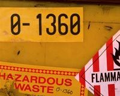

|

As consumers, we expect that the food we buy in our stores and markets is "safe". But what does "safe" mean? It may be safe to eat the food now, but many years later we might contract a disease from the many low level contaminants that are present in some of our foods. Scientists, therefore use terms such as hazards and risks. A hazard is the potential of causing harm under certain circumstances. A risk is the chance of it happening. For example: we recognize that skiing has a hazard associated with it. People get killed. But compared to the many millions of people who ski every year, few people actually die i.e. our enjoyment of skiing outweighs the risk involved. A similar approach is taken with food.
Risk Assessment attempts to identify the hazards and quantify the risks associated with them. Risk Management decides what to do about the risk; whether it is acceptable or not.
Food Hazards
Food hazards fall into the following categories:
- Biological - bacterial, fungal, viral, parasitic (worms and protozoa) and their toxins. Microbiological hazards are by risk categorized as Severe (e.g Clostridium botulinum types A, B, E and F, Moderate (Potentially Extensive Spread) (e.g Salmonella, Shigella, E Coli, Ascaris) and Moderate (Limited Spread) (e.g.) Bacillus cereus, Campylobacter jejuni, Giardia lamblia). The USDA estimates that these foodborne pathogens cause up to 9,000 deaths and 33 million illnesses a year in the U.S, largely among children and the elderly. New strains of bacteria such as Escherichia coli 0157:H7 are carried in animal waste and produce deadly toxins that can kill children. Meats contaminated with feacal material or fresh vegetables that have been fertilized with animal manure pose particular hazards.
- Physical - contaminants such as stones, glass, metal, seeds, personal effects. Consuming these products can lead to cuts and wounds if the contaminant goes unnoticed.
- Chemical - naturally occuring chemicals (toxins), agricultural chemicals (pesticides, fertilizers), food additives (to preserve, improve taste and texture). Of all the chemicals in our food supply, natural chemicals are considered to be a much greater risk than all the other chemicals
combined. This is because we are ingesting at least 10,000 times more natural chemicals than man-made chemicals
(by weight).
- Nutritional - too much or too little of specific food constituents which leads to disease e.g eating foods high in saturated fats over a long period of time can lead to heart disease.
Processing and Safety.
Quality control, or the overseeing of the safe and nutritious production of food, is another aspect of the food sciences. Food safety should be a main concern of any company producing food products. Illness, injury or even death can occur through consumption of a food product. Not only is this a hazard to individuals but also it is bad business that could result in huge financial losses to the company and even bankruptcy.
Regulation of the food industries is controlled by Health and Welfare Canada, a federal government department. These
regulations are enforced through stringent guidelines and the meticulous inspection of food by specially trained government employees. Regulations protect consumers from fraudulent products and practices, and ensure that food is safe to eat.
HACCP
In the quality control labs of major food processing companies, food and food processing procedures are closely monitored using specially designed equipment. Quality control ensures that legal requirements for a product are met, as well as maintaining the company's own standards of excellence. Unfortunately, hazards are only identified after the problem has been found, sometimes by the consumer. HACCP (Hazard Analysis and Critical Control Point System) attempts to minimise the problems of food processing by carefully identifying every step, from raw material to final product and putting in place procedures which detect and rectify the hazard at each of these steps.
Consumers Responsibility
Although every effort is made to keep our food supply safe, it is often the consumer who fails to follow simple rules to avoid "food poisoning":
Storage: Read the package for storage instructions and expiry dates. When shopping, select cold foods last and put them away first.
Cleanup: Wash hands, cutlery, cutting boards and counters with hot soapy water. Don't forget the dish cloth or sponge!
Throw it out, when in doubt ! - check for broken packaging or dented cans. Carefully examine food for unusual colour or smell. Don't taste it!
Thaw correctly: thaw food in the refrigerator. Thawing in a microwave or under running water is also acceptable. Once thawed, cook the food immediately. Don't refreeze thawed foods without cooking them first.
Cook correctly: Cook food thoroughly and serve immediately. Meat, poultry and fish are particular hazards. In the danger zone between 4 deg and 50 deg C, bacteria can multiply rapidly. Meat and poultry need to be cooked to a minimum of 160 degrees C. Use a meat thermometer to be sure that the centre is at the correct temperature.
Clean in Between: Keep all raw food away from other foods that are to be eaten fresh (salads, breads etc.) Cleanup cutting boards and counter tops as soon as you have done preparing the raw food. Serve cooked meat on a different platter than the raw meat was originally on. Thoroughly wash all fresh produce in running water.
Refrigerate Left Overs: Put left over foods in the refrigerator immediately as many cooked foods are excellent food for microoganisms too!.Set your refrigerator at 4 deg C or colder and your freezer at -18 deg C or colder.
|
Consumer Guidelines
Cold storage times for Ground Meat and Ground Poultry
Refrigerator (4 deg C (40 F) or below)
| Product | Days |
| Uncooked ground meat and ground poultry (bulk or patties) | 1 to 2 days |
| Cooked ground meat and ground poultry (hamburgers, meat loaf and dishes containing ground meats) |
3 to 4 days |
Freezer (-18 deg C (0 F) or below)
| Product | Months |
| Uncooked ground meat and ground poultry (bulk or patties) | 3 to 4 months |
| Cooked ground meat and ground poultry (hamburgers, meat loaf and dish containing ground meats) | 2 to 3 months |
Internal Temperatures for safe cooking
| Product | Temperature |
| Uncooked ground meat | (71 deg C (160 F)) |
| Uncooked ground poultry | (74 deg C (165 F)) |
| All cooked leftovers, reheated | (74 deg C (165 F)) |
|